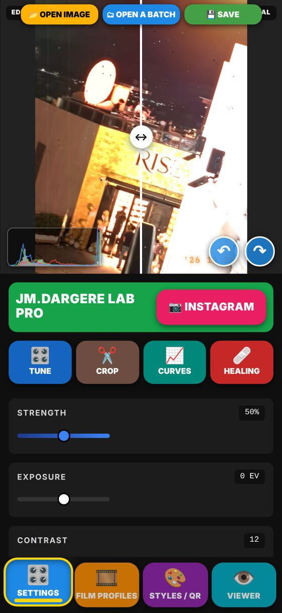
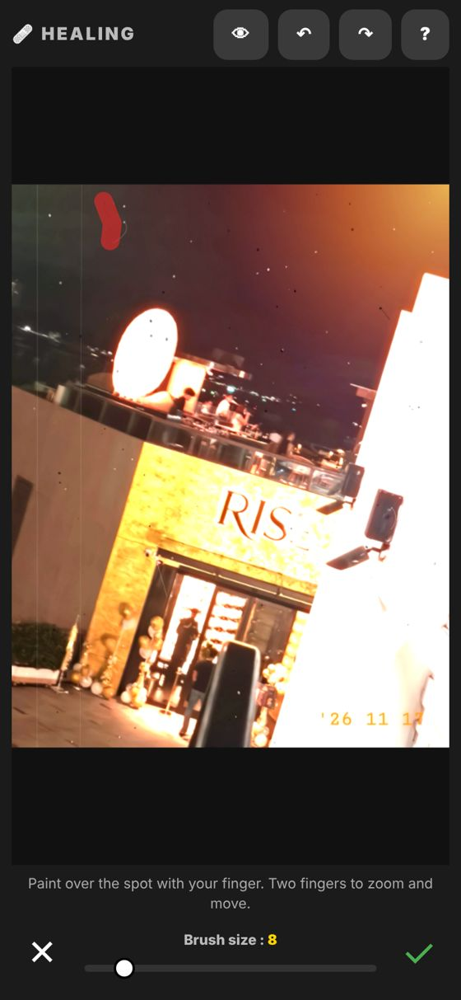

JM LAB PRO
User guide
Offline photo editing
by JM.Dargère
Version 4.6 • November 2026
Contents
- 1The main screen
- 2Film profiles and settings
- 3Tune image (like Snapseed)
- 4Crop and straighten
- 5Curves
- 6Healing
- 7Saving – where are my photos?
- 8Editing a batch of photos
- 9Styles, QR codes and tools
- 10About, language, privacy
- 11Tips and FAQ
In three steps
- Open a photo with 📂 OPEN IMAGE at the top.
- Pick a look in FILM PROFILES, then fine-tune in SETTINGS.
- Save with 💾 SAVE.
JM LAB PRO works without Internet, without an account and without ads. Your photos never leave your phone.
1The main screen
At the top
- 📂 OPEN IMAGE: choose a photo.
- 🗂 OPEN A BATCH: choose several photos to edit at once (chapter 8).
- 💾 SAVE: save the edited photo (appears as soon as a photo is open).
The preview
- Drag the ↔ slider: on the left the edited photo, on the right the original.
- Histogram at the bottom left: how the tones are spread. A blue dot = crushed shadows, red = blown highlights. Tap it to shrink it.
- ↶ ↷ at the bottom right: undo / redo a setting.
The tabs at the bottom
SETTINGS • FILM PROFILES • STYLES / QR • VIEWER

The green banner: tap JM.DARGERE LAB PRO to open About, and 📷 INSTAGRAM for the Instagram page.
2Film profiles and settings

Film profiles
Tap a profile: the photo takes its look at once. The chosen profile is outlined in yellow.
LABO PRO EV5 auto exposureVivid Boost vivid
Natural balancedSoft Portrait skin
Soft Chrome warm matteCinema cine
Black & WhiteColor Film
SETTINGS tab
At the top, the toolbar:
🎛️ TUNE ✂️ CROP 📈 CURVES 🩹 HEALING
An active tool is outlined in yellow.
Below, the sliders: Strength (of the profile), Exposure, Contrast, Temperature, Tint, Highlights, Shadows, Vibrance, Saturation, Clarity, Blacks, Whites, Dehaze, Vignette. RESET sets everything back to zero.
⭐ Favourites: your favourite styles appear as buttons above the sliders (see chapter 9).
3Tune image
Works like Snapseed's Tune Image tool: everything is done by sliding your finger on the photo.
Pick the setting
Swipe up or down: the list appears. Lift your finger on the setting you want: Brightness, Contrast, Saturation, Ambiance, Highlights, Shadows, Warmth, Tint, Structure, Blacks, Whites, Dehaze, Vignette, Profile strength.
Or tap ☰ at the bottom.
Change the value
Swipe right (more) or left (less). The value shows at the top, and on the yellow ruler at the bottom. You can also tap the ruler directly.
The buttons
- 👁 held: see the original photo.
- ↶ ↷: undo / redo.
- ✨ Auto: automatic light correction.
- ✕: leave without keeping • ✓: keep.

Tune image drives the same sliders as the SETTINGS tab: it also applies to batches and presets.
6Healing
Like Snapseed's Healing tool: it removes dust, a blemish, a wire, a small spot.
- Zoom in with two fingers on the area to fix (and move around with two fingers).
- Paint over the spot with your finger: it turns red.
- Lift your finger: the spot is replaced by the surrounding texture.
- Brush size: at the bottom. The finer the brush, the cleaner the result.
- 👁 held: see the original • ↶ ↷: undo / redo.
- ✓ keeps the fixes (applied when saving) • ✕ leaves without keeping.
Near a very contrasted edge (lamp, white sky), use a fine brush and zoom in: a large brush may copy a piece of nearby scenery.

Healing only applies to the open photo (each photo has its own spots).
7Saving – where are my photos?
Tap 💾 SAVE. A banner shows the processing time, then ✔ SAVED with the file name. The original photo is never changed: the copy ends with _JMD_LAB_PRO.jpg.
| What you do | Where it goes |
|---|
| 💾 SAVE (one photo) | Pictures › JM LAB PRO |
| Batch with “🖼️ Gallery” | Pictures › JM LAB PRO › batch name |
| Batch with “📂 Chosen folder” | The chosen folder (SD card, USB key…) › batch name |
| Batch ZIP | Downloads › JM LAB PRO |
| Viewer | The save folder chosen in the viewer |
| Deleted photos (viewer) | _SUPPRIMES folder (recoverable) |
| Backups of your styles | Pictures › JM LAB PRO › Sauvegardes |
| Exported styles, this guide | Downloads › JM LAB PRO |
Finding them
In the Gallery or Google Photos: JM LAB PRO album. Or in the Files app: Pictures › JM LAB PRO.
What is applied when saving
Profile + sliders + Tune image + Curves + Crop + Healing + Effects (sky, face, grain…) + Frame and signature if turned on.